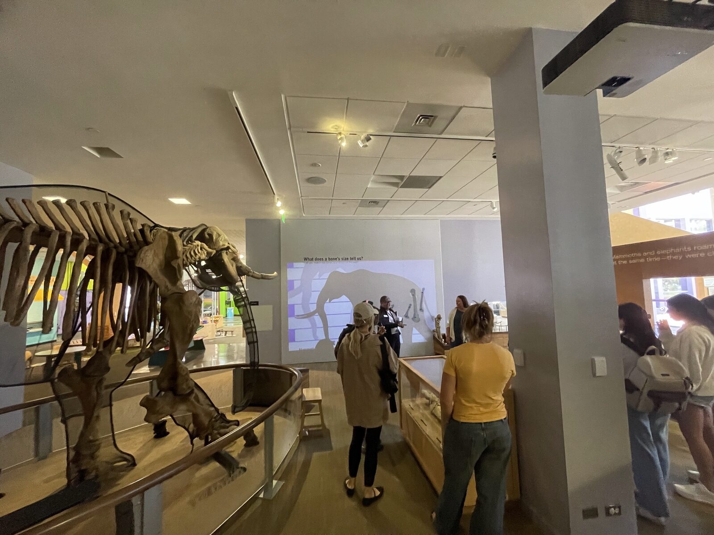
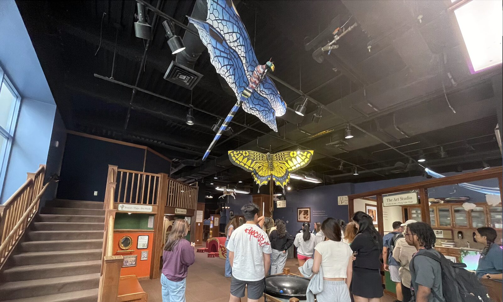
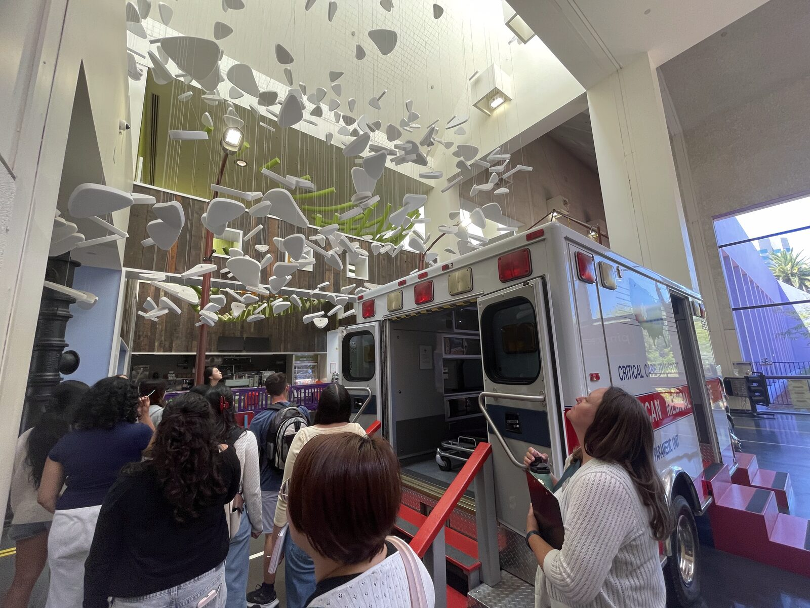
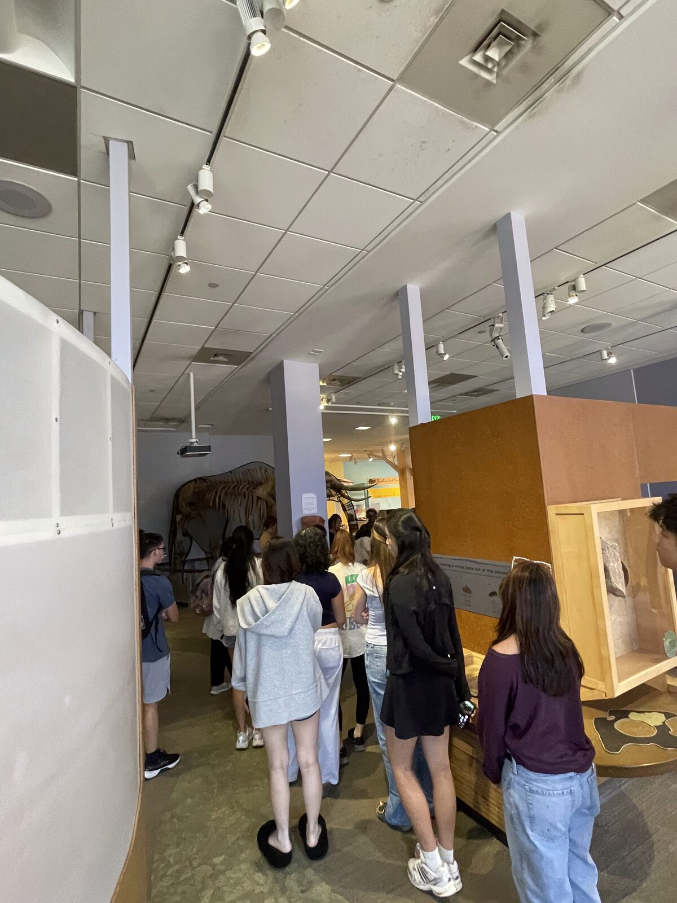
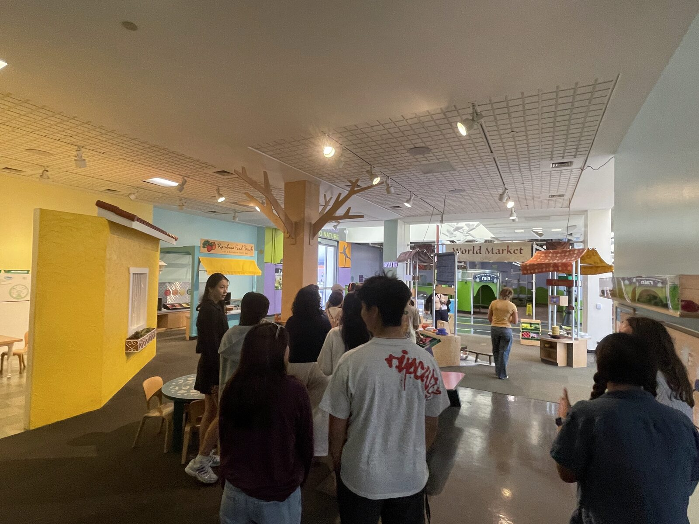
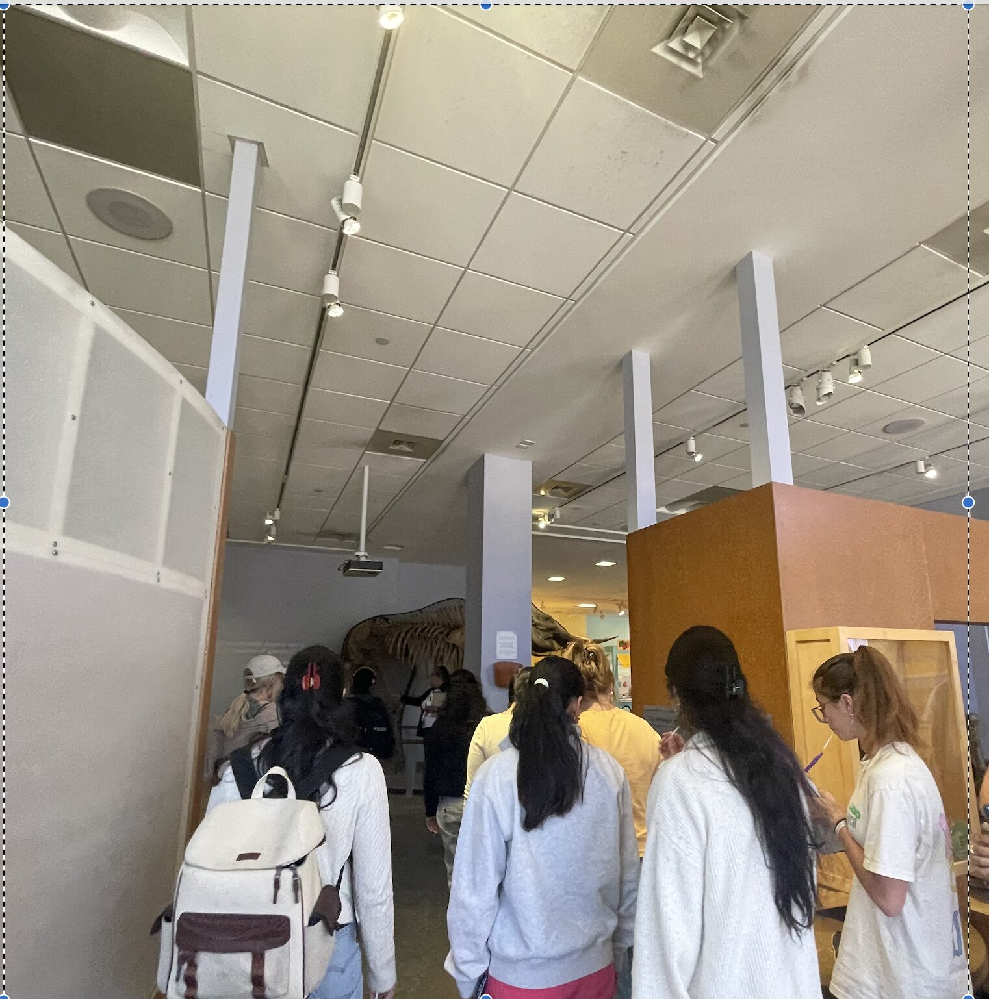

Stanford University · Summer 2026
PSYCH 131S: The Developing Mind
How humans learn, think, and communicate
About the course
PSYCH 131S is an introduction to developmental psychology, built around a simple question: how do human beings, starting as babies who cannot yet speak or walk, come to learn, think, and communicate the way we do? We look at the methods developmental scientists use to study minds we cannot interview, at what those methods have taught us, and at what the field still argues about.
The course is designed for Stanford undergraduates in their first years. No prior psychology background is assumed. We move quickly but stay grounded in concrete examples: real and recent studies and data, and real observations of children out in the world.
What students take away
By the end of the term, students should be able to:
- Explain how developmental cognitive scientists study minds that cannot yet speak, and what those methods can and cannot tell us.
- Read a developmental study and separate its claim from its evidence and its limitations, rather than taking a headline at face value.
- Track how a scientific question changes over time as new evidence, methods, and replications come in.
- Bring a developmental lens to a real setting where children learn, and notice what is happening beyond what a designer or a caregiver assumed would happen.
- Write and speak about developmental research for people who are not in the field, without losing the honesty of the science.
- Engage in a project-based learning experience that allows them to apply the concepts they learn to a real-world setting and bridge the gap between theory and application.
Community-engaged component
The course is a community-engaged course, supported by a Graduate Community-Engaged Teaching (Grad CET) Fellowship from Stanford (2025–2026).
Our community partner
Children's Discovery Museum of San Jose
Students spend part of the term observing at the Children's Discovery Museum of San Jose in small teams, working on research questions the museum's education staff have asked us to help think through. It gives students a place to practice careful looking, honest description, and research communication with a real audience who will actually read what they write.
From our orientation visit to the museum · July 6, 2026






How the course is taught
Class time is a mix of short lectures, in-class demonstrations of the studies we are reading, small-group discussion, and hands-on activities. Assessment is weighted toward the museum project and toward writing and speaking about research, rather than toward exams. Readings are short and chosen so that most of the intellectual work happens together in the room.
My teaching approach on the Teacher page says most of what I would say here: teaching is mostly listening, and my job is to take a student's question seriously enough that we can both learn something from following it. This course has been my first chance to really build a whole term around that idea.
Questions about the course
If you are a prospective student, a colleague thinking about a similar course, or someone at a museum or school wondering how the community-engaged piece works, I am happy to hear from you: samahabd@stanford.edu.